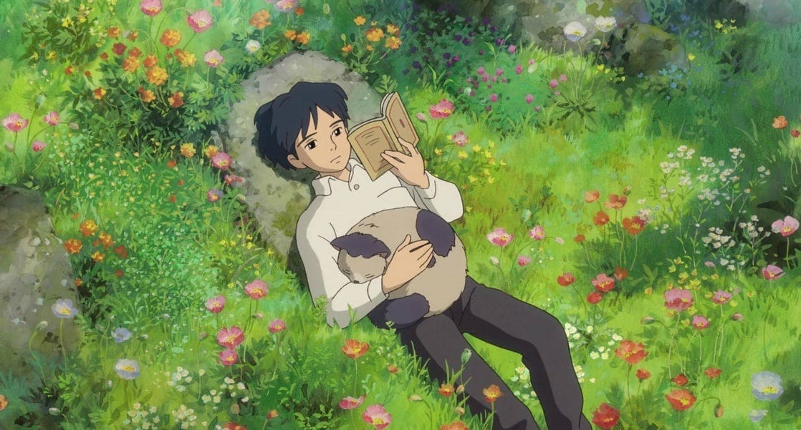

¡Hola! Soy Ari, tengo 23 años y actualmente estoy cursando estudios en Ingeniería en Sistemas de Computación y en el idioma inglés. Soy una persona apasionada por la tecnología y los idiomas, siempre buscando aprender nuevas cosas y mejorar mis habilidades.
En mi tiempo libre, disfruto de una variedad de pasatiempos. Uno de mis mayores placeres es sumergirme en las páginas de un buen libro, explorando mundos imaginarios y ampliando mi conocimiento. También soy un entusiasta de los videojuegos; me encanta perderme en mundos virtuales y enfrentarme a desafíos emocionantes.
Disfruto mucho de la compañía de mis amigos, ya sea saliendo a cenar, haciendo actividades al aire libre o simplemente pasando el rato juntos. Además, tengo un gran amor por el cine y las series de televisión; me encanta perderme en historias cautivadoras y explorar nuevos géneros.
